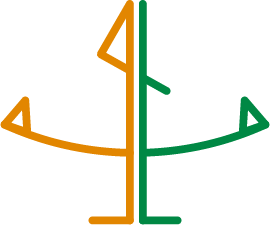
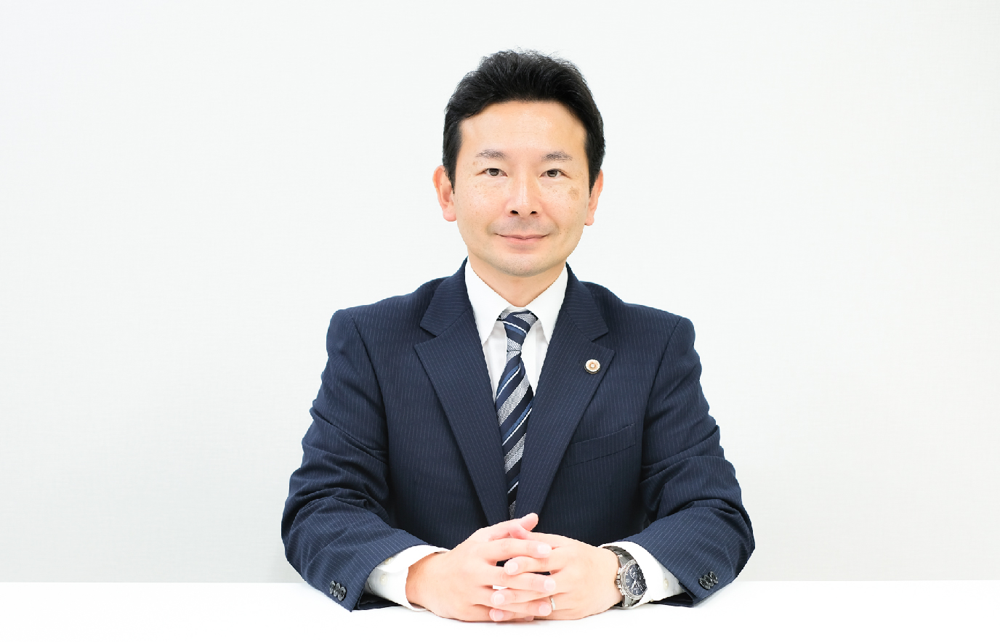
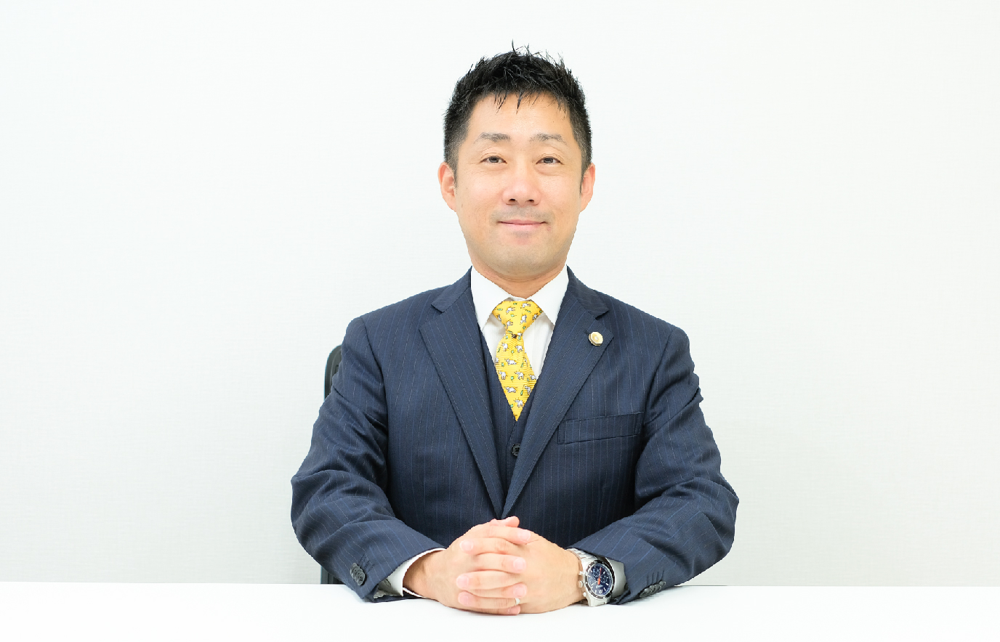
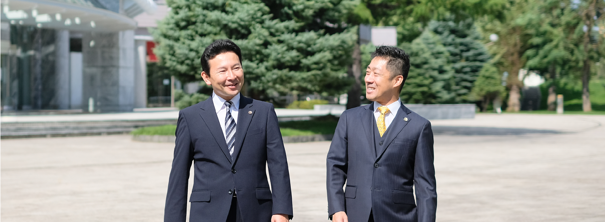

事務所理念
philosophy

問題の解決を通して
心まで晴れにする法律事務所でありたい
人は一生懸命生きているからこそ、思わぬトラブルに見舞われることがあります。
そんな時、側に寄り添ってくれる人がいれば、どれだけ心強いでしょうか。
単に、一方の正義を押し通して勝ちを得たとしても、本当の幸せにはつながりません。
私たちは、法律家である前にそれぞれ一人の人間として、バランス感覚を大切に、
問題や紛争の解決に当たりたいと考えております。
「親身に話を聞いてくれたことで励まされた」
「専門的な話を、優しくわかりやすく教えてくれた」
「問題を解決できただけでなく、気持ちまで楽になった」
「先生のおかげで笑顔で暮らせるようになった」
そのように、ご依頼主様が心から平穏な毎日を取り戻してくださることが、
私たちの何よりの喜びです。
当事務所では、皆様のお悩みを一刻も早く解消し、最善のスタートを切れるよう、
共に弁護士として経験を積んだ猪瀨健太郎と北澤慎之介が、
タッグを組んで皆様の笑顔を取り戻すお手伝いをしてまいります。
事務所概要
outline
- 事務所名
- 猪瀬・北澤法律事務所
- 所在地
- 〒060-0062 北海道札幌市中央区南2条西10丁目1番地オエノン北海道ビル4階
- 設立
- 平成30年8月27日
- 所属弁護士
- 猪瀬健太郎（2010年弁護士登録）
北澤慎之介（2010年弁護士登録） - 電話番号
- 011-232-7115(猪瀬直通) /
011-596-9348(北澤直通) - FAX番号
- 011-596-9349
- 営業時間
- 平日 9:00〜17:00
- 定休日
- 土日・祝日
- 業務内容
-
〈個人のお客様〉
- ・交通事故
- ・不動産
- ・損害賠償請求
- ・貸金請求
- ・離婚・男女問題
- ・親子関係
- ・相続・遺言
- ・成年後見
〈法人のお客様〉
- ・顧問契約
- ・契約書の作成
- ・リーガルチェック
- ・労使問題
- ・債権回収
- ・知的財産 (商標・著作権等)
- ・株主・株式
- ・その他，取引先とのトラブル
弁護士プロフィール
profile

弁護士
猪瀬 健太郎
テキスト、テキスト、テキスト、テキスト、テキスト、テキスト、テキスト、テキスト、テキスト、テキスト、テキスト、テキスト、テキスト、テキスト、テキスト
- 昭和５１年大阪府豊中市生まれ
- 父の仕事の関係で転勤の多い幼少期でした。北海道旭川市でも４年間ほど生活し、北海道への思い入れができた時期でもありました。
- 神奈川県立鎌倉高等学校卒業
- 短距離選手として陸上部の活動に全力を注ぎました。陸上部の部長として人をまとめることの難しさも経験しました。
- 早稲田大学法学部卒業
- 学業はもとより、アルバイトや語学留学など興味のあることに積極的に打ち込みました。様々な経験を通じて、弁護士として仕事をするうえでのバランス感覚を養うことができました。
- 北海道大学法科大学院卒業
- 幼少期を過ごした北海道への憧れから、北海道大学の大学院へ進学しました。現在も共に弁護士として活躍する同期の友人たちと出会うことができました。
- 平成２２年１２月 弁護士登録
- 北海道内の弁護士過疎地域での活動を希望し、そのための養成事務所（札幌市内）へ入所して経験を積ませていただきました。
- 平成２４年１１月 留萌ひまわり基金法律事務所の所長に就任
- 民事事件や家事事件、刑事事件など種類を問わず多くのご相談やご依頼を受けました。大変な仕事でしたが、弁護士として多くの経験を積むことができました。
- 平成２７年１１月 猪瀬法律事務所を開設
- 任期満了にともない、札幌市へ戻り事務所を開設しました。それまでの経験を踏まえて、依頼者の方にとって何が一番よい解決方法なのかを大切にして、その方の声に寄り添いながら問題解決をいたします。 昭和５１年大阪府豊中市生まれ 父の仕事の関係で転勤の多い幼少期でした。北海道旭川市でも４年間ほど生活し、北海道への思い入れができた時期でもありました。
- 家族構成
- テキスト、テキスト
- 趣味
- 読書、スキー
- 好きな言葉
- テキスト、テキスト
- 愛読書
- 推理小説

弁護士
北澤 慎之介
テキスト、テキスト、テキスト、テキスト、テキスト、テキスト、テキスト、テキスト、テキスト、テキスト、テキスト、テキスト、テキスト、テキスト、テキスト
- 昭和５２年生まれ
- 子供の時は，落ち着きのない子供で外で遊ぶことが好きでした。
- 札幌旭丘高校卒業
- 高校時代は，２年間硬式テニスをしていました。親から定期代をもらって，定期を買わずに１時間かけて自転車で通学していました。
- 立命館大学法学部卒業
- 大学は弁護士を目指して法学部に入るも，応援団に入ってしまい４年間応援団に明け暮れていました。大学生のときは法律の勉強はほとんどせず，卒業してから法律の勉強をはじめました。
- 北海道大学法科大学院卒業
- 法科大学院に入ってからは一生懸命勉強していました。仲間と一緒に勉強できたおかげで司法試験に合格できました。
- 平成２２年１２月弁護士登録
- 札幌市内の法律事務所勤務 弁護士登録後は，仕事に追われる日々で，途中で体調を崩し一時休業していました。
- 平成２４年２月北澤慎之介法律事務所開設
- 事務所開設以降は，お客様一人一人に満足してもらうためにはどうすれば良いかを常に考えてきました。 また，人間味ある弁護士になるため自分自身の人間性を磨くべく法律以外の勉強にも力を入れています。 これからも変わることなく，依頼者の方が笑顔になれるようお手伝いしていきます。
- 家族構成
- 妻、子ども二人
- 趣味
- マラソン、家庭菜園
- 好きな言葉
- 大樹深根、良樹細根、凡事徹底
- 愛読書
- 花の慶次、道を開く（松下幸之助）
二人の出会いと、
事務所設立のきっかけ

私たち二人は、北海道大学院法科大学院で同期生として出会い、共に弁護士を目指して励まし合いながら、切磋琢磨し歩んできました。
弁護士試験に合格し、現場でさまざまな依頼者様と対峙し、それぞれのキャリアを重ねてきました。
時にお酒を酌み交わしながらお互いの近況を語り合う中で、「一生懸命生きている人に寄り添い、紛争から救いたい」という思いを共有し、いつしか「パートナーとしてお互いの力を合わせ、より多くの依頼者様を助けたい」と考えるようになりました。
積み重ねたキャリアが違うからこそ、解決方法の幅が広がります。
二人いるからこそ、力は2倍、いや3倍にも4倍にもなります。
そこで、平成30年8月27日、「猪瀬・北澤法律事務所」を開設いたしました。
安心と信頼感を大切に、依頼者様の気持ちに寄り添う弁護士事務所として、
二人の力を合わせて皆様と共に歩んでまいります。